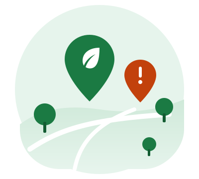

EcoSpot
Consulta de pontos sustentáveis no mapa de Curitiba.
- Mapa interativo de Curitiba
- Em breve: pontos de coleta, reciclagem e descarte correto
- Em breve: busca e filtros por categoria
O EcoSpot + EcoAlert reúne, em um só lugar, a consulta a pontos sustentáveis e o registro de problemas ambientais na cidade de Curitiba.

A consulta ao EcoSpot é aberta a todos os visitantes. O registro de ocorrências no EcoAlert será exclusivo para usuários cadastrados.
Consulta de pontos sustentáveis no mapa de Curitiba.
Registro de problemas ambientais por usuários cadastrados.
Encontre no EcoSpot onde descartar corretamente ou onde existem iniciativas sustentáveis perto de você.
Percebeu descarte irregular, entulho ou outro problema ambiental? Anote o local e o tipo de ocorrência.
Com uma conta cadastrada, registre o problema no EcoAlert e contribua com informações sobre o seu bairro.
O EcoSpot + EcoAlert é voltado ao município de Curitiba. As informações reunidas pela plataforma poderão contribuir para o trabalho de órgãos como a Prefeitura Municipal de Curitiba e a Secretaria Municipal do Meio Ambiente (SMMA).
Plataforma em desenvolvimento. O mapa do EcoSpot já pode ser consultado por qualquer visitante. Você já pode criar sua conta; em breve, usuários cadastrados poderão registrar ocorrências ambientais no EcoAlert.